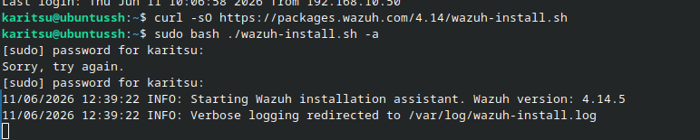
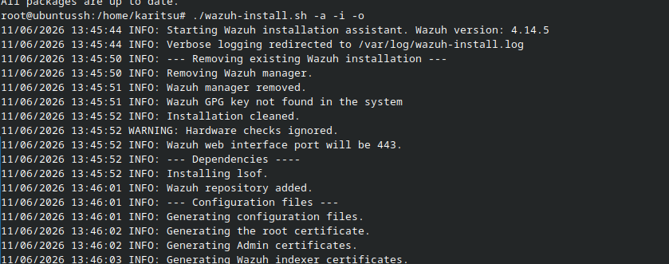
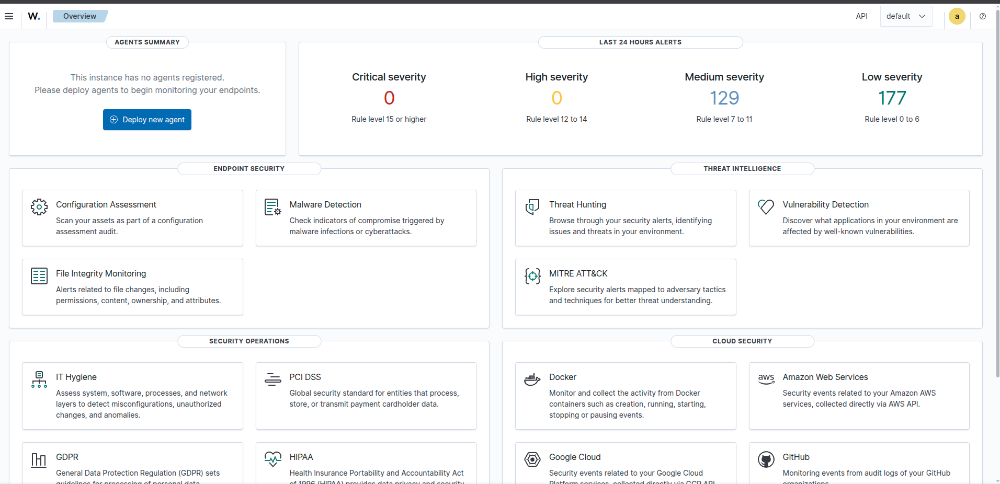

En esta tercera entrada de la serie Bluebox se documenta la instalación de Wazuh sobre la máquina virtual Ubuntu Server 24.04 creada en la Misión 1. Wazuh es una plataforma de seguridad open source que combina SIEM, EDR y monitorización de integridad de archivos, todo integrado en un dashboard centralizado.
1. Instalación de Wazuh
Desde la sesión SSH en el Ubuntu Server, se ejecutó el asistente de instalación oficial de Wazuh. Este script despliega automáticamente los componentes necesarios: Wazuh manager, indexer y dashboard.
curl -sO https://packages.wazuh.com/4.7/wazuh-install.sh
sudo bash wazuh-install.sh -a
Al finalizar el proceso, el instalador muestra las credenciales de acceso al dashboard. Es importante registrar el usuario y la contraseña generados en un gestor de contraseñas (Bitwarden, en este caso).
2. Acceso al dashboard
Desde el equipo principal se accedió al dashboard vía navegador web:
https://192.168.10.210Las credenciales de acceso son las proporcionadas por el instalador:
- Usuario:
wazuh - Contraseña: (almacenada en Bitwarden)

Una vez autenticado, el dashboard principal muestra el estado general del entorno: agentes conectados, eventos de seguridad y alertas generadas por el propio sistema.

3. Problemas encontrados
Para resolverlo, fue necesario:
- Aumentar la RAM de la VM de 2 GB a 18 GB desde la configuración de Proxmox, deteniendo la VM previamente.
- Expandir el disco de 20 GB a un tamaño suficiente. Tras ampliar el disco desde Proxmox, se requirió redimensionar las particiones en el sistema invitado. Se siguieron las siguientes guías de referencia:
Adicionalmente, durante una reinstalación de Wazuh, el gestor de paquetes no permitía eliminar correctamente wazuh-manager. Para forzar la limpieza se ejecutó:
sudo rm -rf /var/lib/dpkg/info/wazuh-manager.*
sudo apt updateTras estos ajustes, la instalación se completó sin errores.
4. Estado actual
- Plataforma: Wazuh 4.7 sobre Ubuntu Server 24.04 LTS
- URL del dashboard:
https://192.168.10.210 - Usuario:
wazuh - Recursos finales: 18 GB RAM / disco expandido
- Primeras alertas: Pendientes de agentes adicionales
La instalación se completó el 11/06/2026 en un intervalo de 14:30 a 15:55. El dashboard está operativo y listo para recibir agentes en los próximos pasos.